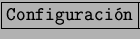
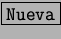

Lo primero que hay que hacer es configurar una cuenta de Internet. Los pasos son relativamente simples usando el kppp.
El kppp se puede ejecutar desde terminal o clickeando en K-Internet-Conexión a Internet.
Luego hay que ir a  (fig. 6.2) para crear una conexión a Internet con un click en  (fig. 6.3).
Pudiendo así llenar los datos del provedor de Internet. Los datos importantes son: el nombre y el número a marcar. Luego hay que ir a la lengüeta Servidor Nombres y poner la dirección IP del Servidor de Nombres o Servidor DNS que es parte de la información que nos brinda el proveedor de Internet.
Una vez configurado ya se puede elegir como parte de las posibles configuraciones en Conectar con. Sólo falta el nombre de usuario y la clave como muestra la figura 6.4.
Con sólo apretar  se debería conectar sin problemas
(fig 6.5).
se debería conectar sin problemas
(fig 6.5).
De todas formas, muchas veces la realidad es muy distinta a la teoría. Esta es una lista de posibles problemas:
No pretende ser una lista exhaustiva, tan sólo son los problemas más comunes.